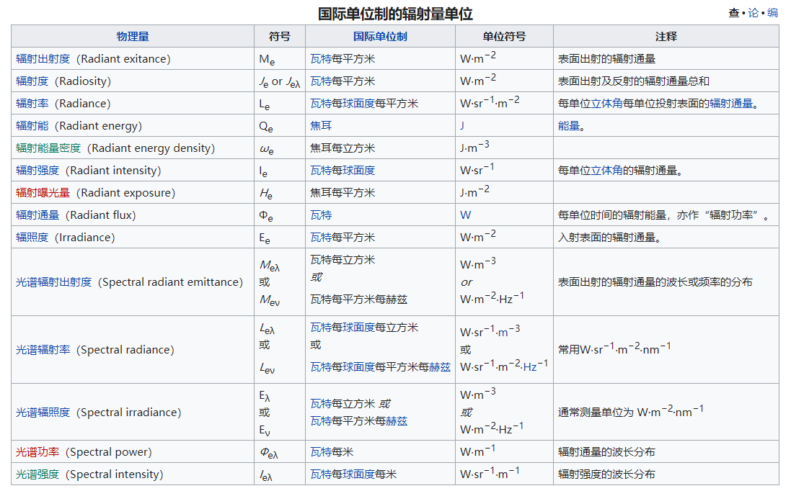
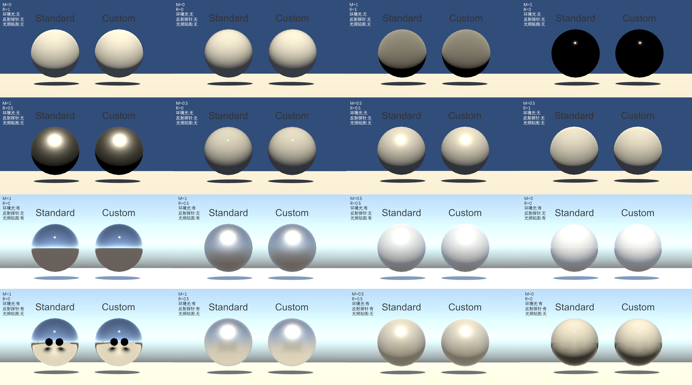
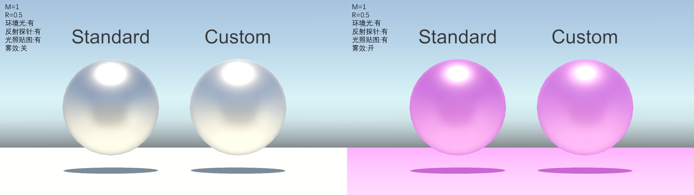
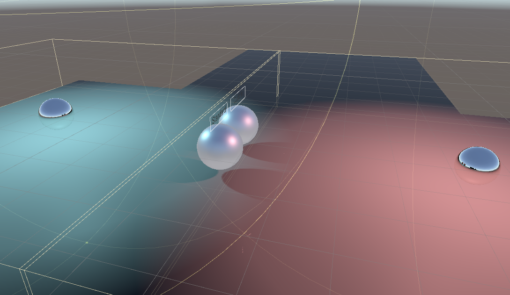
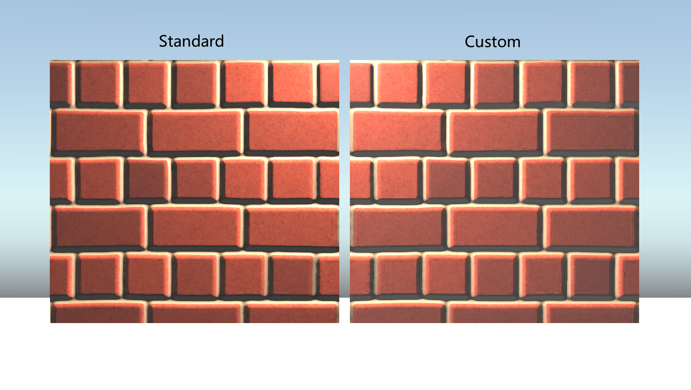
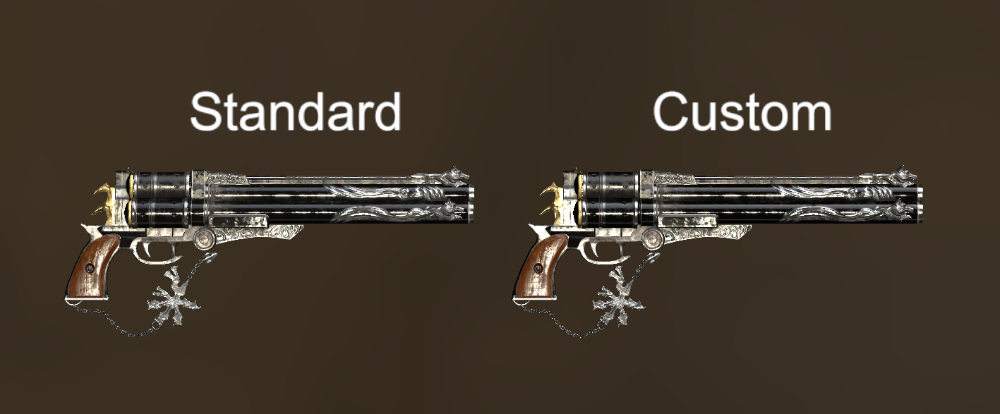
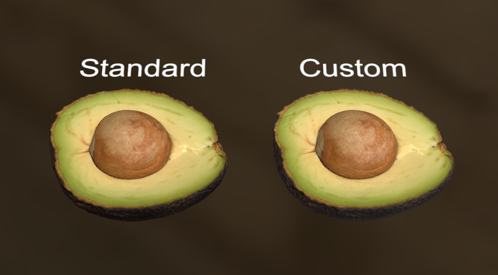

在对《Unity Shader入门精要》和PBR知识的学习后，对Unity 3D标准着色器Standard的部分源码进行了学习，尝试在Unity中写一个效果与Standard第一个SubShader类似的PBR着色器。
1. 基础概念
基于物理的渲染中有两个重要的概念：微表面与辐照度。
1.1 微表面模型

普通的光照模型假设要进行光照计算的区域是一个光滑的平面，表面的方向可以用一个单一的法向量来定义。而基于微表面的光照模型则认为要进行光照计算的区域是由无数个微小表面组成的粗糙区域。由于这些微表面已经微小到无法逐像素地进行区分，因此我们假设由一个粗糙度参数，然后用统计学的方法来概略的估算微表面的粗糙程度。基于这样一个平面的粗糙度来计算出某个向量的方向与微表面平均取向方向一致的概率。
基于微表面光照模型的物理渲染遵循能量守恒定律，即一个不自发光的表面，其出射光线的能量永远不能超过入射光线的能量。为了遵守能量守恒定律，我们需要对漫反射光和镜面反射光之间做出明确的区分。当一束光线碰撞到一个表面的时候，它就会分离成一个折射部分和一个反射部分。反射部分就是会直接反射开来而不会进入平面的那部分光线，这就是我们所说的镜面光照。而折射部分就是余下的会进入表面并被吸收的那部分光线，这也就是我们所说的漫反射光照。
1.2 辐照度
辐照度学建立在几何光学的基础上，即辐射是以直线传播的，不考虑电磁波干扰、衍射等性质。关于辐照度有几个重要的概念：
- 辐射通量(Radiant flux)：辐射通量Φ表示的是单位时间的辐射能量。
- 辐射强度(Radiant Intensity)：辐射强度表示的是在单位球面上，一个光源向每单位立体角所投送的辐射通量。
- 辐照度(Irradiance)：辐照度表示到达单位(投影)面积的辐射通量，也就是辐射通量对于面积的密度。
- 辐射率(Radiance)：辐射率表示每单位立体角每单位投影面积的辐射通量。一种直观的辐射率的理解方法是：将辐射率理解为物体表面的微面元所接收的来自于某方向光源的单位面积的光通量，因此截面选用垂直于该方向的截面，其面积按阴影面积技术计算。
辐射率(Radiance)与辐射强度(Radiant Intensity)和辐照度(Irradiance)的联系：
- 辐射率(Radiance)为每单位立体角上的辐照度(Irradiance);
- 辐射率(Radiance)为每单位投影面积上的辐射强度(Radiant Intensity)。
这里引用一张国际单位制的辐射量单位wiki的图：

1.3 BRDF
双向反射分布函数接受入射（光）方向ωi，出射（观察）方向ωo，平面法线n以及一个用来表示微平面粗糙程度的参数a作为函数的输入参数。BRDF可以近似的求出每束光线对一个给定了材质属性的平面上最终反射出来的光线所作出的贡献程度。
目前有很好几种BRDF都能近似的得出物体表面对于光的反应，但是几乎所有实时渲染管线使用的都是一种被称为Cook-Torrance BRDF模型。Cook-Torrance BRDF兼有漫反射和镜面反射两个部分：
$$
f_r = k_d f_{lambert} + k_s f_{cook-torrance}
$$
这里的kd是早先提到过的入射光线中被折射部分的能量所占的比率，而ks是被反射部分的比率。BRDF的左侧表示的是漫反射部分，右侧则表示镜面反射部分。
2. 直接光照
2.1 直接光漫反射
$$
f_{d i f f}(l, v)=\frac{\text { base Color }}{\pi}\left(1+\left(F_{D 90}-1\right)(1-n \cdot l)^{5}\right)\left(1+\left(F_{D 90}-1\right)(1-n \cdot v)^{5}\right) \
$$
其中，
$$
F_{D 90}=0.5+2 \text { roughness }(\boldsymbol{h} \cdot l)^{2}
$$
首先是直接光的漫反射部分，直接光的漫反射使用和Unity一样的Disney漫反射项（与Disney的原始公式有所区别，这里的ComputeDisneyDiffuseTerm中传入的是感性粗糙度），再与光源项和遮蔽项相乘便可得到直接光的漫反射结果。
1 | float3 LightTerm = _LightColor0.rgb * UNITY_PI * NdotL; |
2.2 直接光镜面反射
$$
f_{cook-torrance} = \frac{DFG}{4(\omega_o \cdot n)(\omega_i \cdot n)}
$$
镜面反射则要复杂些，最主要的则是上面三项：
$$
NDF_{GGX TR}(n, h, \alpha) = \frac{\alpha^2}{\pi((n \cdot h)^2 (\alpha^2 - 1) + 1)^2}
$$
D项：法线分布函数，估算在受到表面粗糙度的影响下，取向方向与中间向量一致的微平面的数量。使用的是基于GGX的公式。
$$
F_{Schlick}(h, v, F_0) = F_0 + (1 - F_0) ( 1 - (h \cdot v))^5
$$
1 | half D = ComputeGGXTerm(NdotH, Roughness); |
F项：菲涅尔反射，描述了会有多少光来参与镜面反射。即在不同的表面角下表面所反射的光线所占的比率。
1 | half3 F = ComputeFresnelTerm(SpecularColor,VdotH); |

1 | half V = ComputeSmithJointGGXVisibilityTerm(NdotL, NdotV, Roughness); |
得到镜面反射项后，与漫反射类似，再与光源项和遮蔽项相乘便可得到直接光的镜面反射结果。
3. 间接光照
3.1 间接光漫反射

间接光漫反射部分使用一个环境立方体贴图及其生成的辐照度图，使用任何一个向量对立方体贴图进行采样，就可以获取该方向上的场景辐照度。将该强度与漫反射率、遮蔽项相乘，再加上烘培好的光照贴图部分即可得到间接光的漫反射部分。
1 | //天光，三阶球谐函数 |
3.2 间接光镜面反射
间接光镜面反射则是根据物体材质的表面粗糙度、遮蔽系数等参数计算物体材质对周围环境内容的反射，即计算物体之间的间接光照效果作为间接光的镜面反射值。通过IBL技术根据当前材质表面的粗糙程度来选择不同的mipmap等级的纹理贴图，以达到随着材质表面粗糙度的增加而反射图案变得越来越模糊的效果。
1 | //采样反射探针 |
4. 一些细节
4.1 多光源计算
多光源的计算只要新增一个Pass，在第二个Pass中计算额外的光源即可。由于我们已经在第一个Pass中计算了平行光和间接光照，因此在第二个Pass中我们只要计算会衰减的点光源和聚光灯。
1 | //其他光源 |
4.2 自发光与雾效
自发光部分暂不考虑物体自发光对其他物体的影响，因此只需要声明一个自发光变量emission然后在光照结果中加上。
1 | half3 FinalColor = |
雾效则需指定根据雾的类型展开对应的shader cariant，然后声明片元着色器中用到的雾化坐标并填充，在计算完其他光照结果后再进行雾效的计算。
1 |
|
4.3 视差贴图
视差贴图根据储存在纹理中的数据对平面的特定区域的顶点的高度进行位移，视差贴图技术使用视线与物体相交检测的思想。因为视差贴图对uv坐标进行了偏移，因此要将这块内容放在处理其他贴图之前。
1 | //TtoO0存储切线空间的矩阵 |
4.4 反射探针的插值
我们通过IBL对反射探针的纹理进行采样，而当物体在两个反射探针之间移动时则需要对两个反射探针进行插值以达到平滑过渡的效果。
1 | //对多个反射探针进行插值 |
5. 对比验证
5.1 基本对比

5.2 多光源
5.3 雾效

5.4 探针插值

5.5 视差贴图

5.6 综合对比


6. Demo制作
在完成Shader的制作后，在Unity里搭建一个场景来体现实现的PBRShader的一些特性并进行验证。
在Unity中利用使用了PBR流程的模型与贴图搭建了一个汽车驾驶的小游戏，同时使用多种光源、反射探针、天空盒、自发光、雾效与烘培好的光照贴图。对场景中的各物件使用自定PBR着色器来验证着色器的正确效果。

参考：
- 《Unity Shader入门精要》
- 《Unity3D内江着色器源码剖析》
- The PBR Guide part 1[https://academy.substance3d.com/courses/the-pbr-guide-part-1-zh]
- The PBR Guide part 2[https://academy.substance3d.com/courses/the-pbr-guide-part2-zh]
- LearnOpenGL-PBR-理论[https://learnopengl-cn.github.io/07%20PBR/01%20Theory/]
- LearnOpenGL-PBR-光照[https://learnopengl-cn.github.io/07%20PBR/02%20Lighting/]
- LearnOpenGL-PBR-IBL-漫反射辐照[https://learnopengl-cn.github.io/07%20PBR/03%20IBL/01%20Diffuse%20irradiance/]
- LearnOpenGL-PBR-IBL-镜面IBL[https://learnopengl-cn.github.io/07%20PBR/03%20IBL/02%20Specular%20IBL/]
- 原核生物都能看懂的PBR-江流[https://zhuanlan.zhihu.com/p/349854976]
- 草履虫都能看懂的PBR讲解（迫真）-云影[https://zhuanlan.zhihu.com/p/137013668]
- 猴子都能看懂的PBR-flashyiyi[https://zhuanlan.zhihu.com/p/33464301]
- 【基于物理的渲染（PBR）白皮书】（一） 开篇：PBR核心知识体系总结与概览-毛星云[https://zhuanlan.zhihu.com/p/53086060]
- 如何在Unity中造一个PBR Shader轮子-宋开心[https://zhuanlan.zhihu.com/p/68025039]
- 【学习笔记】Unity PBR的实现-稻草人[https://zhuanlan.zhihu.com/p/60972473]
- unity build-in管线中的PBR材质Shader分析研究-郭大钦[https://blog.csdn.net/qq_23936433/article/details/108507640?utm_source=app]
- https://nicosq.gitee.io/nicosqblog/